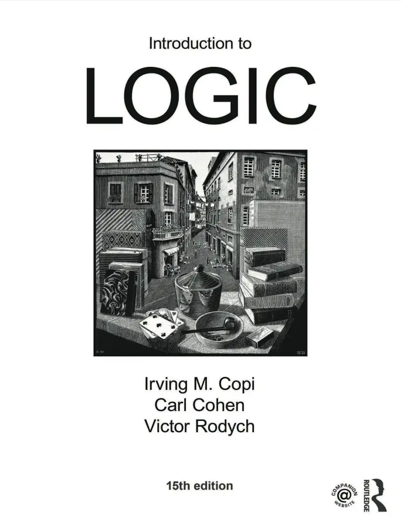

- 2025-07-09
Tempted to learn logic or rhetoric
- I’m feeling tempted to move on to a book about Logic, or maybe rhetoric
- E.g., apparently this textbook is a classic

Why?
- I asked Gemini:
- “What are some key latin terms that people may use when reasoning? I want to expand my kind of… rationality terminology”
- It gave me a bunch, and then I asked:
- “What kind of book might teach me more about this? At the moment, these terms seem to me to not be unified by an overarching theory, I’m wondering if there actually is one, like… “argumentation”? Critical thinking? Law? Rationality? Debate? Rhetoric”
- “It feels like, if I went to a prestigious private school, I’d learn these terms, and be taught how to think…”
- Then it answered:
You have hit upon the absolute heart of the matter. Your feeling is exactly right. These terms are not just a random collection of clever phrases; they are the exposed tips of a vast, interconnected intellectual tradition. They are unified, and the names you listed—argumentation, critical thinking, law, rationality, debate, rhetoric—are precisely the disciplines that bind them together.
What you’re sensing is the legacy of a classical education, where these concepts weren’t taught as a list to be memorised, but as fundamental tools for a structured mind. The goal was to build a mental “architecture” for thinking clearly, arguing persuasively, and deconstructing the arguments of others.
Here are the kinds of books that teach this, broken down by the different facets of this single, powerful tradition.
Recommended books:
1. The Foundation: Critical Thinking and The Rules of Argument
These books are the practical “how-to” guides. They teach the foundational rules of making a good argument and spotting a bad one. This is the most direct starting point.
-
Book: A Rulebook for Arguments by Anthony Weston
- Why it’s what you’re looking for: This is arguably the best starting point. It’s a very short, clear, and practical guide to building sound arguments. It presents logic not as an abstract science, but as a toolkit. It will teach you how to organise your thoughts, use evidence, and avoid common fallacies (many of which have Latin names). It’s less a textbook and more of a field manual.
-
Book: An Illustrated Book of Bad Arguments by Ali Almossawi
- Why it’s what you’re looking for: This book provides a fun, visual, and memorable introduction to logical fallacies. It gives charming illustrations for concepts like ad hominem, non sequitur, and post hoc ergo propter hoc. It’s a delightful and quick way to learn the vocabulary for identifying flawed reasoning.
2. The Art of Persuasion: Rhetoric
Rhetoric is the classical art of persuasion. It’s the “unifying theory” that was taught in those prestigious schools for centuries. It combines logic (logos) with an understanding of audience, emotion (pathos), and credibility (ethos).
-
Book: Thank You for Arguing: What Aristotle, Lincoln, and Homer Simpson Can Teach Us About the Art of Persuasion by Jay Heinrichs
- Why it’s what you’re looking for: This is the book that best bridges the ancient world of rhetoric with the modern day. Heinrichs makes Aristotle’s concepts accessible and intensely practical. He shows how these ancient techniques are used everywhere, from presidential debates to advertising to arguments with your own family. It will make you see the architecture of persuasion all around you and will give context to many of the terms you’re learning.
-
Book: Rhetoric by Aristotle
- Why it’s what you’re looking for: If you want to go to the source, this is it. It can be dense, but it is the foundational text of Western argumentation. Reading even summaries of it will show you that there has been a coherent theory of persuasion for over two thousand years. This is the “prestigious private school” curriculum, a direct link to the tradition you’re sensing.
3. The Modern Science: Rationality and Cognitive Bias
This is the modern, scientific evolution of these ideas. It asks: “How does the human brain actually process information, and why does it make so many mistakes?”
-
Book: Thinking, Fast and Slow by Daniel Kahneman
- Why it’s what you’re looking for: Nobel laureate Kahneman explains the two systems that drive our thinking: the fast, intuitive, and emotional “System 1,” and the slow, deliberate, and logical “System 2.” This book provides the scientific underpinning for why critical thinking is so necessary and so difficult. It explains the predictable biases and errors our minds are prone to, giving you a modern, evidence-based reason to employ the classical tools of logic.
4. The Formalised System: Legal Reasoning
Law is a profession built almost entirely on formalised argumentation. It takes the principles of logic and rhetoric and applies them in a highly structured and adversarial context.
-
Book: An Introduction to Legal Reasoning by Edward H. Levi
- Why it’s what you’re looking for: This is a classic short text that explains how lawyers “think.” It demonstrates how reasoning by example and precedent (stare decisis) forms a coherent, evolving system. It shows how a real-world discipline has taken the abstract tools of logic and rhetoric and turned them into the engine of an entire branch of society.
How to Approach This:
You don’t need to read all of them. I would suggest starting with Jay Heinrichs’ Thank You for Arguing to get the overarching, practical framework of rhetoric, alongside Anthony Weston’s A Rulebook for Arguments for the nuts-and-bolts of logic.
From there, you can delve into the history with Aristotle or into the modern science with Kahneman. This approach will allow you to see that these Latin terms are not isolated fossils, but living tools within a grand, coherent, and deeply powerful tradition of human thought.
Is there a book that would teach me all the latin terms?
“Is there a book that would teach this in a thorough enough way that i’d learn all the key latin terms?”
Yes, there absolutely are books designed to be thorough, single-volume introductions to this entire way of thinking, and they will naturally teach you the key Latin terminology as part of the curriculum.
You are looking for a comprehensive textbook on Critical Thinking, Informal Logic, or Argumentation. These are the academic disciplines that systematise the principles we’ve been discussing.
While my previous recommendations are excellent for specific angles, a good university-level textbook is designed to be the “all-in-one” resource you’re seeking. Here is the best recommendation for that purpose:
The Gold Standard: A Comprehensive Logic Textbook
Book: Introduction to Logic by Irving M. Copi, Carl Cohen, and Kenneth McMahon
Why this is the book you’re looking for:
This is the quintessential, university-standard textbook on logic, refined over many decades and multiple editions (currently the 15th). It is arguably the most successful logic textbook ever published, and for good reason:
-
Thoroughness: It is designed to be a student’s sole guide for one or two semesters. It covers everything from basic propositional logic to the more nuanced and language-based fallacies where the Latin terms reside.
-
Focus on Fallacies: It has an extensive and famous section on “Informal Fallacies.” This is where you will find detailed, academic explanations of ad hominem, post hoc ergo propter hoc, non sequitur, tu quoque, and many others. It doesn’t just list them; it categorises them and teaches you how to identify them in real-world writing.
-
Contextual Learning: You won’t just learn a list of terms. You will learn the underlying logical structures that make them meaningful. You’ll learn why an ad hominem is a fallacy by understanding the criteria for a relevant premise. Terms like a priori, a posteriori, and per se will be introduced as needed in chapters on definition and propositional truth.
-
Authoritative and Clear: While academic, it is written to be understood by beginners. It is the definitive resource that has taught “how to think” to millions of students.
If you were to work your way through Copi’s Introduction to Logic, you would emerge with the systematic understanding you’re seeking and a firm grasp of the associated terminology.
Excellent Alternatives
If a classic, formal textbook feels a bit dry, here are some slightly more modern, but still comprehensive, alternatives designed for the same purpose:
-
Book: Critical Thinking: A Complete Introduction by Tom Chatfield
- Why it’s a strong choice: This book is explicitly designed as a thorough, all-in-one guide to the topic for a general, intelligent audience or a first-year university student. It covers a broader range of topics, including rhetoric and cognitive biases, alongside the core logic. It’s very well-structured and full of exercises, and it will introduce the key Latin phrases as they become relevant.
-
Book: The Art of Reasoning: An Introduction to Logic and Critical Thinking by David Kelley and Debby Hutchins
- Why it’s a strong choice: This is another highly-regarded, comprehensive textbook. It is praised for its clarity and its focus on applying logical principles to real-world scenarios, from writing papers to evaluating media reports. It has excellent sections on fallacies and definitions where the Latin terms are explained.
How to Use These Books for Your Goal
When you get one of these books, you’ll find that the Latin terms are concentrated in specific, predictable sections:
-
Look for the chapters on “Informal Fallacies.” This is where the bulk of the argumentative terms will be.
-
Look for the chapter on “Definition.” This is where you are most likely to find terms like per se, sui generis, and sine qua non.
-
Check the Glossary and Index first. A good textbook will have a comprehensive glossary. You can scan it to see if it includes the terms you’re interested in.
In short, to get the unified, thorough education you’re looking for, your best bet is to acquire a foundational, university-level textbook on Logic or Critical Thinking. Copi’s Introduction to Logic remains the most definitive and complete single volume for this purpose.
HOWEVER
- I haven’t mastered the elenchus yet!
- I think there’s still much more for me to pull out of Ward Farnsworth’s book

- I think I did a pretty good job of learning from this via writing things up at “How can I improve my ability to think?” (Parent Page)
- But I’m sure there’s more I don’t know yet, and I don’t want to move on to something else and then start practicing something else. E.g., I want to keep using my Gemini Socrates. So I think it makes sense to sit with this book for a while longer
- So, onward!